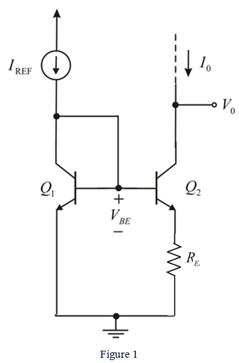

Widlar current source circuit diagram is shown in Figure 1.

Case 1:
Given current transfer ratio,
Base emitter voltage is,
Output current is,
Output resistance of the transistor is,
Trans-conductance is,
Calculate the emitter resistance.
Calculate output resistance of the transistor for unit-ratio source.
Here .
Substitute  for
for  in equation.
in equation.
Compare the value of output resistance  of the transistor for unit-ratio source with the presence of emitter resistance, the output resistance
of the transistor for unit-ratio source with the presence of emitter resistance, the output resistance  .
.
So, the Output resistance changes with the small amount of increase in emitter resistance.
(b)
Case 2:
Given current transfer ratio, .
Base emitter voltage is calculated as

Calculate the Output current.
Calculate the Output resistance of the transistor.
Trans conductance is,
Calculate the emitter resistance.
In the presence of emitter resistance, the output resistance is calculated as:

Calculate output resistance of the transistor for unit-ratio source.

Here  .
.
Substitute  for
for  in equation.
in equation.

Compare the value of output resistance  of the transistor for unit-ratio source with the presence of emitter resistance, the output resistance
of the transistor for unit-ratio source with the presence of emitter resistance, the output resistance  .
.
So, the Output resistance changes with the small amount of increase in emitter resistance.
(c)
Case 3:
Given current transfer ratio,
Base emitter voltage is calculated as
The Output current is ,
The Output resistance of the transistor is calculated as:
Trans conductance is calculated as:
Calculate the emitter resistance.
In the presence of emitter resistance, the output resistance is calculated as
Simplify further.
Calculate output resistance of the transistor for unit-ratio source.
Here .
Substitute for in equation.
Compare the value of output resistance  of the transistor for unit-ratio source with the presence of emitter resistance, the output resistance
of the transistor for unit-ratio source with the presence of emitter resistance, the output resistance  .
.
So, the Output resistance changes with the small amount of increase in emitter resistance.